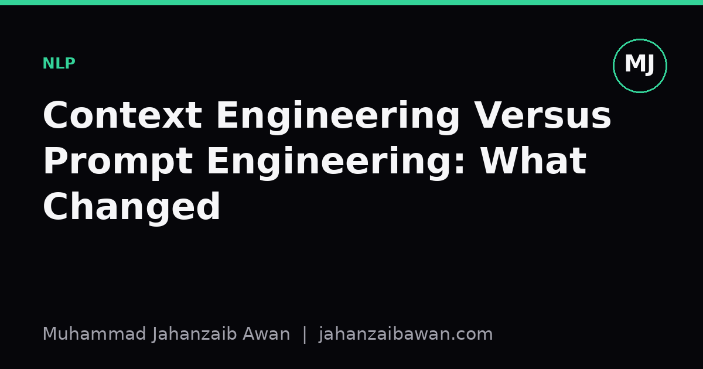

Context Engineering Versus Prompt Engineering: What Changed
Prompt engineering optimised a sentence. Context engineering optimises the whole information pipeline an LLM sees before it writes a single token.

Why this distinction matters
When people first started building with large language models, the unit of work was the prompt. You wrote an instruction, tweaked the phrasing, added a few examples, and measured whether the output got better. That was prompt engineering, and for a while it genuinely was the main lever available, because the model received almost nothing else: a short instruction, maybe a handful of demonstrations, and whatever the user typed.
What changed is not that prompts stopped mattering. It is that the surrounding system got much larger and much more consequential. Modern LLM applications pull in retrieved documents, tool outputs, conversation history, structured metadata, and sometimes the results of earlier model calls, all before the final generation step happens. The prompt is now a small, often templated, part of a much bigger construction job. That bigger job is what people mean by context engineering: deciding what information reaches the model, in what order, in what format, and with what pruning, before a single word of the answer is generated.
This matters practically because the failure modes shifted. A badly worded prompt used to be the obvious suspect when an LLM gave a wrong answer. Now, in a system with retrieval and tool use, the prompt can be perfectly reasonable while the answer is still wrong, because the retrieved passage was irrelevant, the history was truncated at the wrong point, or two contradictory documents were both included without any signal about which one was more current. Diagnosing that requires a different mindset to diagnosing an awkward instruction.
A worked example of where the leverage actually sits
Consider a support assistant built over a company's internal documentation. Suppose there are twelve thousand articles, and the assistant answers questions by retrieving the five most relevant chunks and stuffing them into the prompt alongside the user's question. Early on, the team notices the assistant gives confidently wrong answers about refund policy roughly one time in six. The instinctive first move is prompt engineering: add a line saying 'only answer using the provided context' and 'say you do not know if the context is insufficient'. That helps a little, cutting the error rate to perhaps one in eight.
The bigger gain comes from inspecting what was actually retrieved. It turns out the refund policy exists in three versions across the document store: an old PDF from two years ago, a wiki page updated last quarter, and a half-finished draft someone left public. The retriever, which scores by semantic similarity alone, often pulls the old PDF because it uses the same phrasing as the question. No amount of prompt wording fixes this, because the model is being asked to reason over genuinely conflicting, unlabelled material. The fix is context engineering: tagging documents with recency and status metadata, filtering out drafts, re-ranking retrieved chunks by a recency-aware score, and explicitly labelling each chunk in the prompt with its source and date so the model has a basis for preferring one over another.
After that change, the error rate might drop to one in twenty, a far larger improvement than the wording tweak produced. The instruction to the model barely changed. What changed was the quality, provenance, and structure of what it was given to read. This is the core empirical claim behind context engineering: in most deployed systems, the ceiling on performance is set by what the model can see, not by how politely or precisely it is asked to see it.
There is a second, quieter effect worth naming: context window economics. Every chunk included costs tokens, and irrelevant or redundant chunks do not just waste budget, they actively compete for the model's attention with the one chunk that actually answers the question. Trimming five mediocre chunks down to two excellent ones often improves accuracy even though less text is supplied overall. That is a context engineering decision, not a prompt wording decision, and it is easy to miss if evaluation only ever varies the instruction.

Why this needs its own evaluation discipline
The practical consequence is that testing an LLM system now has at least two axes that must be varied and measured separately: the instruction and the context construction pipeline. If a team only ever A/B tests prompt wording while holding the retrieval and formatting pipeline fixed, they will systematically underestimate how much room for improvement exists, and they risk declaring a prompt 'better' when really the context it happened to be tested against was unusually clean that day.
A sensible evaluation setup separates these concerns deliberately. Hold the prompt fixed and vary only the retrieval strategy, chunk size, and metadata filtering, then measure accuracy on a held-out set of questions with known correct answers. Separately, hold the context pipeline fixed and vary only the instruction wording. Doing both lets a team attribute gains to the right component, which matters enormously when deciding where to spend engineering effort next sprint. Conflating the two, which is still common, leads to a lot of wasted time polishing sentences when the real problem is a stale index or an unranked retriever.
There is also a leakage risk specific to context engineering that prompt engineering never had to worry about much: if the test questions were themselves used to tune the retriever's similarity thresholds, or if the document store used for evaluation was curated after seeing which answers the model got wrong, the reported accuracy will not transfer to production. The context pipeline is now part of the model's effective training signal in a loose sense, and it deserves the same discipline around held-out data that any other model component gets.
The practical takeaway
Prompt engineering did not disappear, and a clear instruction still prevents silly mistakes. But for most systems built on retrieval, tools, or multi-step reasoning, the biggest and most durable gains now come from engineering what the model is shown: filtering, ranking, labelling, deduplicating, and budgeting context deliberately. If a system is underperforming, it is worth asking a blunt question before touching the prompt again: has anyone actually looked at what the model received on the failing examples? Often the answer explains the failure far better than any wording ever could.